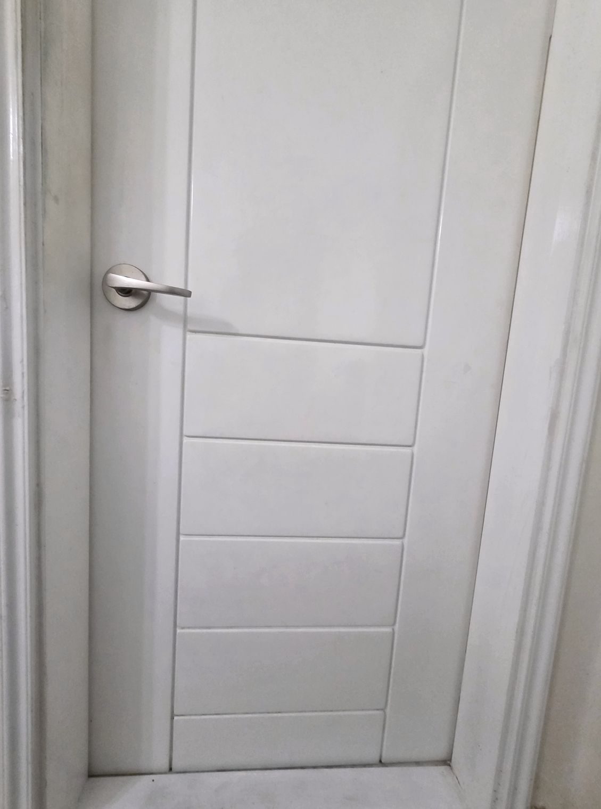
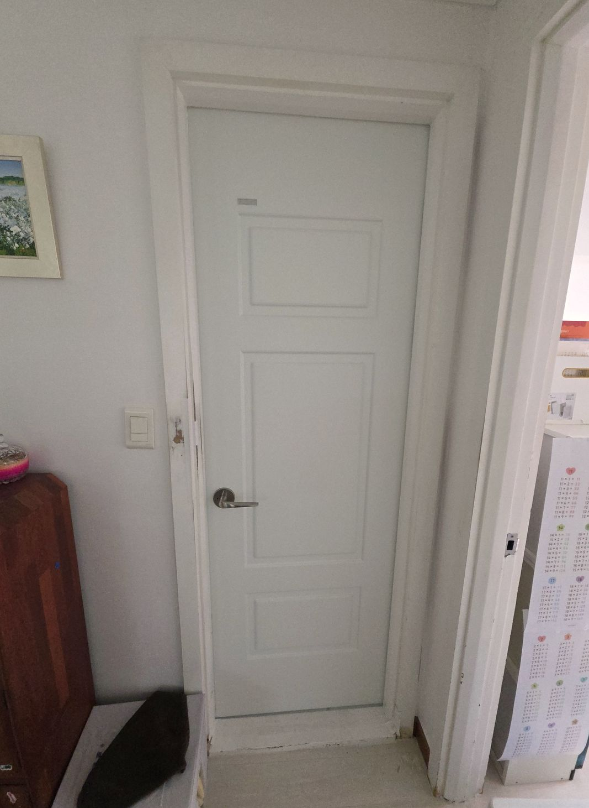
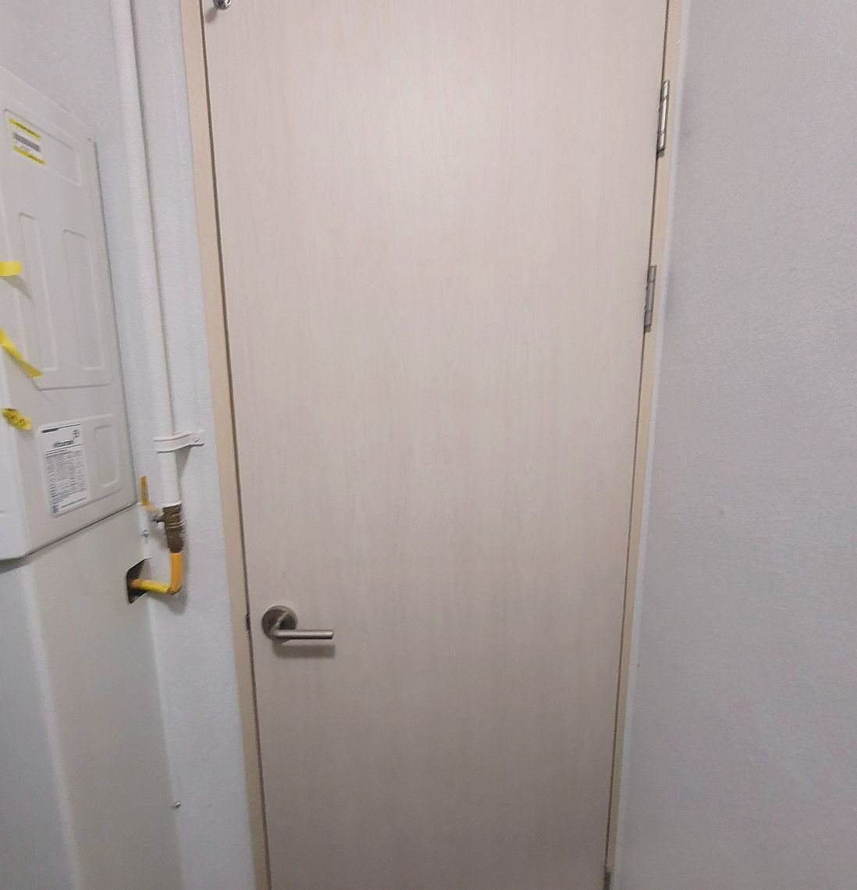
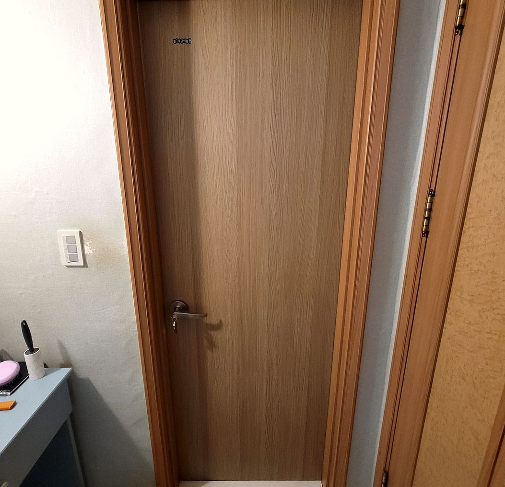
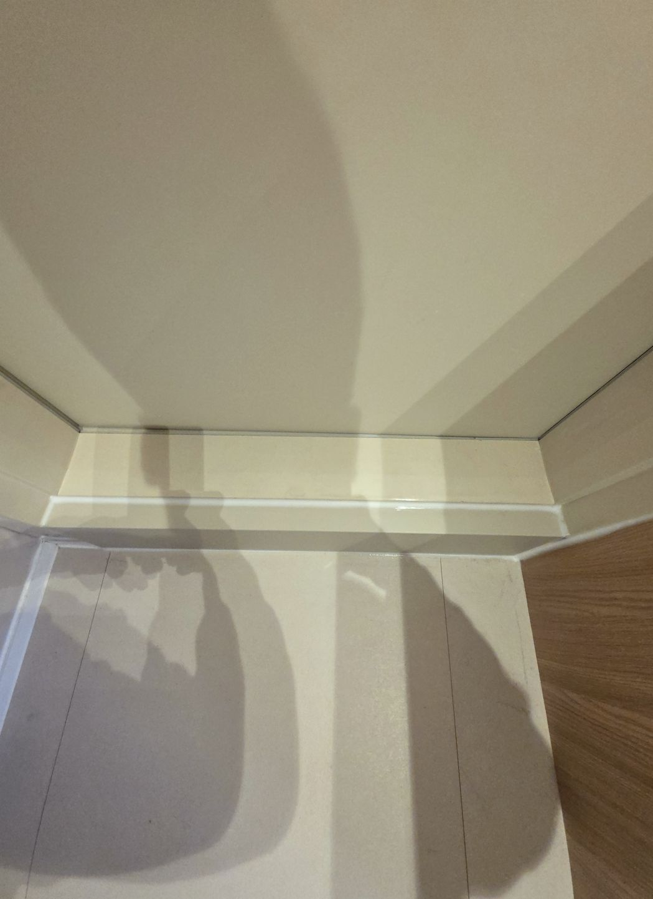
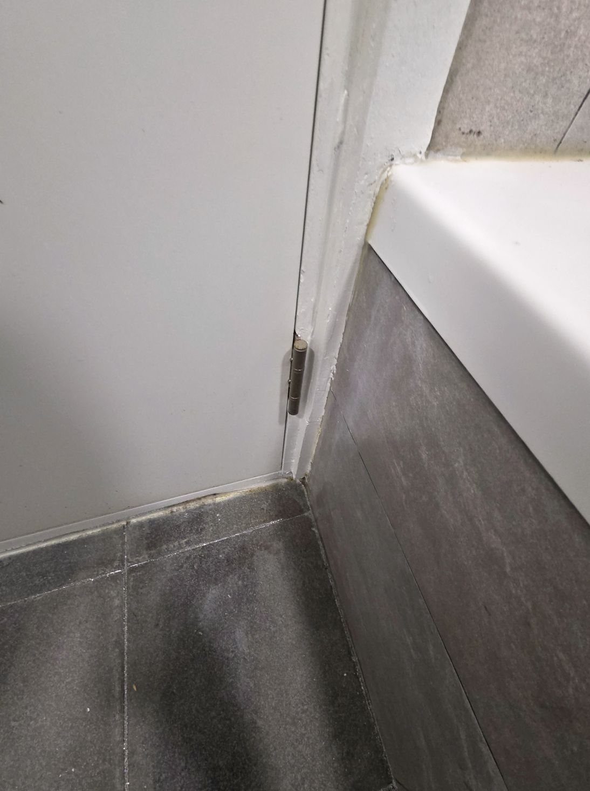

화장실 문이 습기 때문에 부풀어서 안 닫혔는데 틀어진 문틀까지 같이 봐주셔서 근본 원인이 잡혔습니다. 다음에 다른 문도 문제 생기면 또 부탁드릴 생각입니다.
남도O · 관악구 · 2025.11
문이 안 닫힌다고 문짝부터 바꾸는 경우가 많습니다. 하지만 처짐·뒤틀림·걸림의 원인은 대개 경첩과 문틀 정렬에 있습니다. 문틀이 밀린 채로면 문짝을 새로 사도 똑같이 안 닫힙니다.
그래서 저희는 수리로 잡히는지부터 먼저 보고, 수리로 안 되는 경우에는 그 자리에서 솔직하게 말씀드립니다. 억지로 수리하고 다시 부르는 일이 서로 손해이기 때문입니다.
서울·경기·인천 전역으로 출장 나가며, 경첩 조정이나 손잡이 교체 같은 작업은 대부분 방문한 날 1~2시간이면 끝납니다.
아래 중 하나라도 해당되신다면 문짝을 새로 맞추기 전에 먼저 연락 주세요
경첩이 처졌거나 나사 구멍이 헐거워진 상태입니다. 문짝 자체는 멀쩡한 경우가 대부분입니다
문틀이 안쪽으로 밀렸거나 걸림쇠 위치가 어긋난 겁니다. 조정으로 잡힙니다
문틀이 기울었습니다. 경첩 쪽에 심을 넣어 각을 잡습니다
문짝이 한쪽으로 처졌다는 신호입니다
래치 내부가 마모된 상태입니다. 손잡이만 교체하면 됩니다
문턱 상단이 마모돼 단차가 생긴 경우로, 문턱만 보수하면 해결됩니다
사진 두 장이면 수리 가능 여부부터 알려드립니다. 대부분 방문한 날 끝납니다
문 전체 한 장과, 걸리는 부분 가까이 한 장을 문자로 보내주세요
수리로 되는지, 교체가 나은지 사진 단계에서 솔직하게 말씀드립니다
대부분 1~2시간이면 끝납니다
몇 번 여닫아보며 걸림 없는지 같이 확인합니다
경첩 보수부터 문틀 교정, 문턱 단차 조정까지 실제로 진행한 수리 사례입니다

경첩 보수나사 구멍이 헐거워져 문이 3cm 내려앉았던 현장

문틀 조정문틀이 밀려 세게 밀어야 닫히던 집입니다

기울기 교정문틀 기울기를 잡아 해결했습니다

손잡이 교체래치 마모로 손잡이만 교체한 사례

문턱 보수문턱 상단을 메워 단차를 맞췄습니다

출입문 정렬여닫이가 무거워진 상가 출입문을 조정했습니다
경첩인지, 문틀인지, 문턱인지에 따라 손보는 방식이 달라집니다 — 4가지 시공
헐거워진 나사 구멍을 메워 다시 잡고, 필요하면 경첩을 교체해 문 높이와 각도를 원래대로 되돌립니다
틀어진 문틀에 심을 넣어 수직·수평을 다시 잡습니다. 문틀 전체를 뜯지 않고 조정하는 방식입니다
헛도는 손잡이, 안 잠기는 방문 잠금장치를 같은 규격으로 교체합니다
닳거나 깨진 문턱 상단을 메워 문이 걸리지 않게 단차를 맞춥니다
방문 도어 문턱 수리를 맡겨주신 분들이 남겨주신 후기를 그대로 옮겼습니다.
화장실 문이 습기 때문에 부풀어서 안 닫혔는데 틀어진 문틀까지 같이 봐주셔서 근본 원인이 잡혔습니다. 다음에 다른 문도 문제 생기면 또 부탁드릴 생각입니다.
오래된 나무문이라 틀어짐이 심했는데 여러 개 문을 한 번에 봐주셔서 시간 절약이 됐어요. 이제 문 여닫을 때 걸리는 것도 없고 소리도 안 납니다.
현관문 안쪽 방문이 자꾸 저절로 열려서 불편했는데 문 무게 중심까지 계산해서 경첩 위치를 조정해주셨습니다. 아이가 있는 집이라 안전해져서 마음이 놓입니다.
아이가 문에 손 끼일까 봐 걱정하던 참이었는데 여러 개 문을 한 번에 봐주셔서 시간 절약이 됐어요. 친절하게 봐주셔서 다른 방문도 부탁드렸습니다.
문틀이랑 문 사이 틈이 안 맞아서 겨울에 웃풍이 심했는데 필요한 부품만 딱 교체해서 비용이 예상보다 적게 나왔습니다. 다음에 다른 문도 문제 생기면 또 부탁드릴 생각입니다.
다른 곳에서는 그냥 문짝을 통째로 갈자고 했는데 작업 시간도 한 시간 정도로 빨리 끝났어요. 생각보다 저렴하게 해결돼서 만족스러웠어요.
현관문 안쪽 방문이 자꾸 저절로 열려서 불편했는데 설명을 자세히 해주셔서 왜 문이 처졌는지 이해가 됐습니다. 굳이 문짝 교체 안 해도 된다고 하셔서 비용도 아꼈습니다.
방문이 아래쪽에 걸려서 매번 힘줘서 열어야 했는데 여러 개 문을 한 번에 봐주셔서 시간 절약이 됐어요. 이렇게 간단하게 해결될 일인지 몰랐네요.
문이 처져서 바닥을 긁는 소리가 계속 나서 스트레스였는데 작업 시간도 한 시간 정도로 빨리 끝났어요. 아이가 있는 집이라 안전해져서 마음이 놓입니다.
현관문 안쪽 방문이 자꾸 저절로 열려서 불편했는데 문짝을 통째로 안 갈아도 된다고 하셔서 비용 걱정을 덜었습니다. 빠르고 깔끔하게 끝내주셔서 좋았습니다.
문이 처져서 바닥을 긁는 소리가 계속 나서 스트레스였는데 작업 전에 상태를 사진으로 보여주면서 설명해주셨어요. 생각보다 저렴하게 해결돼서 만족스러웠어요.
방문도 이중창처럼 단열이 안 돼서 겨울마다 추웠는데 문 아래쪽 닳은 부분만 깎아서 맞춰주셨어요. 다음에 다른 문도 문제 생기면 또 부탁드릴 생각입니다.
화장실 문이 습기 때문에 부풀어서 안 닫혔는데 필요한 부품만 딱 교체해서 비용이 예상보다 적게 나왔습니다. 이제 문 여닫을 때 걸리는 것도 없고 소리도 안 납니다.
아이가 문에 손 끼일까 봐 걱정하던 참이었는데 틈새 마감재까지 새로 넣어주셔서 웃풍도 줄었어요. 몇 달 지났는데 아직도 부드럽게 잘 여닫힙니다.
방문이 아래쪽에 걸려서 매번 힘줘서 열어야 했는데 틈새 마감재까지 새로 넣어주셔서 웃풍도 줄었어요. 친절하게 봐주셔서 다른 방문도 부탁드렸습니다.
아이가 문에 손 끼일까 봐 걱정하던 참이었는데 작업 시간도 한 시간 정도로 빨리 끝났어요. 다음에 다른 문도 문제 생기면 또 부탁드릴 생각입니다.
문틀이랑 문 사이 틈이 안 맞아서 겨울에 웃풍이 심했는데 경첩이랑 문틀 정렬부터 다시 잡아주시더라고요. 굳이 문짝 교체 안 해도 된다고 하셔서 비용도 아꼈습니다.
방문이 아래쪽에 걸려서 매번 힘줘서 열어야 했는데 문 아래쪽 닳은 부분만 깎아서 맞춰주셨어요. 빠르고 깔끔하게 끝내주셔서 좋았습니다.
다른 곳에서는 그냥 문짝을 통째로 갈자고 했는데 문 아래쪽 닳은 부분만 깎아서 맞춰주셨어요. 이렇게 간단하게 해결될 일인지 몰랐네요.
새로 이사 온 집인데 안방 문이 뻑뻑해서 알아보다가 작업 전에 상태를 사진으로 보여주면서 설명해주셨어요. 이제 문 여닫을 때 걸리는 것도 없고 소리도 안 납니다.
다른 곳에서는 그냥 문짝을 통째로 갈자고 했는데 작업 전에 상태를 사진으로 보여주면서 설명해주셨어요. 아이가 있는 집이라 안전해져서 마음이 놓입니다.
현관문 안쪽 방문이 자꾸 저절로 열려서 불편했는데 작업 전에 상태를 사진으로 보여주면서 설명해주셨어요. 출장비 포함해서 견적을 미리 알려주셔서 부담 없었습니다.
화장실 문이 습기 때문에 부풀어서 안 닫혔는데 작업 시간도 한 시간 정도로 빨리 끝났어요. 겨울인데도 웃풍이 확실히 줄어든 게 느껴져요.
문틀이랑 문 사이 틈이 안 맞아서 겨울에 웃풍이 심했는데 틈새 마감재까지 새로 넣어주셔서 웃풍도 줄었어요. 몇 달 지났는데 아직도 부드럽게 잘 여닫힙니다.
오래된 나무문이라 틀어짐이 심했는데 방문 열고 닫으면서 몇 번이고 높이를 맞춰보시더라고요. 겨울인데도 웃풍이 확실히 줄어든 게 느껴져요.
방문도 이중창처럼 단열이 안 돼서 겨울마다 추웠는데 여러 개 문을 한 번에 봐주셔서 시간 절약이 됐어요. 몇 달 지났는데 아직도 부드럽게 잘 여닫힙니다.
겨울마다 문이 뒤틀려서 안 닫힐 때가 많았는데 틀어진 문틀까지 같이 봐주셔서 근본 원인이 잡혔습니다. 이렇게 간단하게 해결될 일인지 몰랐네요.
경첩이 헐거워져서 문이 살짝 기울어져 있었는데 문 무게 중심까지 계산해서 경첩 위치를 조정해주셨습니다. 다음에 다른 문도 문제 생기면 또 부탁드릴 생각입니다.
문이 처져서 바닥을 긁는 소리가 계속 나서 스트레스였는데 방문 열고 닫으면서 몇 번이고 높이를 맞춰보시더라고요. 친정 부모님 집도 비슷한 문제라 소개해드렸습니다.
오래된 나무문이라 틀어짐이 심했는데 문 아래쪽 닳은 부분만 깎아서 맞춰주셨어요. 굳이 문짝 교체 안 해도 된다고 하셔서 비용도 아꼈습니다.
겨울마다 문이 뒤틀려서 안 닫힐 때가 많았는데 설명을 자세히 해주셔서 왜 문이 처졌는지 이해가 됐습니다. 친정 부모님 집도 비슷한 문제라 소개해드렸습니다.
문이 처져서 바닥을 긁는 소리가 계속 나서 스트레스였는데 여러 개 문을 한 번에 봐주셔서 시간 절약이 됐어요. 친절하게 봐주셔서 다른 방문도 부탁드렸습니다.
겨울마다 문이 뒤틀려서 안 닫힐 때가 많았는데 틈새 마감재까지 새로 넣어주셔서 웃풍도 줄었어요. 굳이 문짝 교체 안 해도 된다고 하셔서 비용도 아꼈습니다.
화장실 문이 습기 때문에 부풀어서 안 닫혔는데 문짝을 통째로 안 갈아도 된다고 하셔서 비용 걱정을 덜었습니다. 이제 문 여닫을 때 걸리는 것도 없고 소리도 안 납니다.
경첩이 헐거워져서 문이 살짝 기울어져 있었는데 작업 전에 상태를 사진으로 보여주면서 설명해주셨어요. 이렇게 간단하게 해결될 일인지 몰랐네요.
화장실 문이 습기 때문에 부풀어서 안 닫혔는데 틈새 마감재까지 새로 넣어주셔서 웃풍도 줄었어요. 출장비 포함해서 견적을 미리 알려주셔서 부담 없었습니다.
방문이 아래쪽에 걸려서 매번 힘줘서 열어야 했는데 문 무게 중심까지 계산해서 경첩 위치를 조정해주셨습니다. 겨울인데도 웃풍이 확실히 줄어든 게 느껴져요.
아이가 문에 손 끼일까 봐 걱정하던 참이었는데 방문 열고 닫으면서 몇 번이고 높이를 맞춰보시더라고요. 친정 부모님 집도 비슷한 문제라 소개해드렸습니다.
오래된 나무문이라 틀어짐이 심했는데 문짝을 통째로 안 갈아도 된다고 하셔서 비용 걱정을 덜었습니다. 친절하게 봐주셔서 다른 방문도 부탁드렸습니다.
겨울마다 문이 뒤틀려서 안 닫힐 때가 많았는데 문 아래쪽 닳은 부분만 깎아서 맞춰주셨어요. 이제 문 여닫을 때 걸리는 것도 없고 소리도 안 납니다.
경첩이 헐거워져서 문이 살짝 기울어져 있었는데 설명을 자세히 해주셔서 왜 문이 처졌는지 이해가 됐습니다. 출장비 포함해서 견적을 미리 알려주셔서 부담 없었습니다.
방문이 아래쪽에 걸려서 매번 힘줘서 열어야 했는데 필요한 부품만 딱 교체해서 비용이 예상보다 적게 나왔습니다. 빠르고 깔끔하게 끝내주셔서 좋았습니다.
현관문 안쪽 방문이 자꾸 저절로 열려서 불편했는데 문 아래쪽 닳은 부분만 깎아서 맞춰주셨어요. 이렇게 간단하게 해결될 일인지 몰랐네요.
다른 곳에서는 그냥 문짝을 통째로 갈자고 했는데 틈새 마감재까지 새로 넣어주셔서 웃풍도 줄었어요. 몇 달 지났는데 아직도 부드럽게 잘 여닫힙니다.
방문도 이중창처럼 단열이 안 돼서 겨울마다 추웠는데 필요한 부품만 딱 교체해서 비용이 예상보다 적게 나왔습니다. 생각보다 저렴하게 해결돼서 만족스러웠어요.
오래된 나무문이라 틀어짐이 심했는데 작업 시간도 한 시간 정도로 빨리 끝났어요. 이렇게 간단하게 해결될 일인지 몰랐네요.
겨울마다 문이 뒤틀려서 안 닫힐 때가 많았는데 문짝을 통째로 안 갈아도 된다고 하셔서 비용 걱정을 덜었습니다. 생각보다 저렴하게 해결돼서 만족스러웠어요.
방문이 아래쪽에 걸려서 매번 힘줘서 열어야 했는데 설명을 자세히 해주셔서 왜 문이 처졌는지 이해가 됐습니다. 친정 부모님 집도 비슷한 문제라 소개해드렸습니다.
새로 이사 온 집인데 안방 문이 뻑뻑해서 알아보다가 문 아래쪽 닳은 부분만 깎아서 맞춰주셨어요. 아이가 있는 집이라 안전해져서 마음이 놓입니다.
겨울마다 문이 뒤틀려서 안 닫힐 때가 많았는데 방문 열고 닫으면서 몇 번이고 높이를 맞춰보시더라고요. 몇 달 지났는데 아직도 부드럽게 잘 여닫힙니다.
문이 처져서 바닥을 긁는 소리가 계속 나서 스트레스였는데 문짝을 통째로 안 갈아도 된다고 하셔서 비용 걱정을 덜었습니다. 빠르고 깔끔하게 끝내주셔서 좋았습니다.
방문이 아래쪽에 걸려서 매번 힘줘서 열어야 했는데 방문 열고 닫으면서 몇 번이고 높이를 맞춰보시더라고요. 이제 문 여닫을 때 걸리는 것도 없고 소리도 안 납니다.
오래된 나무문이라 틀어짐이 심했는데 설명을 자세히 해주셔서 왜 문이 처졌는지 이해가 됐습니다. 출장비 포함해서 견적을 미리 알려주셔서 부담 없었습니다.
새로 이사 온 집인데 안방 문이 뻑뻑해서 알아보다가 방문 열고 닫으면서 몇 번이고 높이를 맞춰보시더라고요. 몇 달 지났는데 아직도 부드럽게 잘 여닫힙니다.
방문도 이중창처럼 단열이 안 돼서 겨울마다 추웠는데 경첩이랑 문틀 정렬부터 다시 잡아주시더라고요. 빠르고 깔끔하게 끝내주셔서 좋았습니다.
새로 이사 온 집인데 안방 문이 뻑뻑해서 알아보다가 작업 시간도 한 시간 정도로 빨리 끝났어요. 굳이 문짝 교체 안 해도 된다고 하셔서 비용도 아꼈습니다.
다른 곳에서는 그냥 문짝을 통째로 갈자고 했는데 설명을 자세히 해주셔서 왜 문이 처졌는지 이해가 됐습니다. 출장비 포함해서 견적을 미리 알려주셔서 부담 없었습니다.
문틀이랑 문 사이 틈이 안 맞아서 겨울에 웃풍이 심했는데 작업 시간도 한 시간 정도로 빨리 끝났어요. 생각보다 저렴하게 해결돼서 만족스러웠어요.
다른 곳에서는 그냥 문짝을 통째로 갈자고 했는데 여러 개 문을 한 번에 봐주셔서 시간 절약이 됐어요. 빠르고 깔끔하게 끝내주셔서 좋았습니다.
경첩이 헐거워져서 문이 살짝 기울어져 있었는데 방문 열고 닫으면서 몇 번이고 높이를 맞춰보시더라고요. 이제 문 여닫을 때 걸리는 것도 없고 소리도 안 납니다.
겨울마다 문이 뒤틀려서 안 닫힐 때가 많았는데 필요한 부품만 딱 교체해서 비용이 예상보다 적게 나왔습니다. 빠르고 깔끔하게 끝내주셔서 좋았습니다.
아이가 문에 손 끼일까 봐 걱정하던 참이었는데 설명을 자세히 해주셔서 왜 문이 처졌는지 이해가 됐습니다. 친절하게 봐주셔서 다른 방문도 부탁드렸습니다.
문이 처져서 바닥을 긁는 소리가 계속 나서 스트레스였는데 틈새 마감재까지 새로 넣어주셔서 웃풍도 줄었어요. 다음에 다른 문도 문제 생기면 또 부탁드릴 생각입니다.
다른 곳에서는 그냥 문짝을 통째로 갈자고 했는데 경첩이랑 문틀 정렬부터 다시 잡아주시더라고요. 겨울인데도 웃풍이 확실히 줄어든 게 느껴져요.
아이가 문에 손 끼일까 봐 걱정하던 참이었는데 필요한 부품만 딱 교체해서 비용이 예상보다 적게 나왔습니다. 아이가 있는 집이라 안전해져서 마음이 놓입니다.
화장실 문이 습기 때문에 부풀어서 안 닫혔는데 설명을 자세히 해주셔서 왜 문이 처졌는지 이해가 됐습니다. 몇 달 지났는데 아직도 부드럽게 잘 여닫힙니다.
방문도 이중창처럼 단열이 안 돼서 겨울마다 추웠는데 작업 시간도 한 시간 정도로 빨리 끝났어요. 빠르고 깔끔하게 끝내주셔서 좋았습니다.
방문이 아래쪽에 걸려서 매번 힘줘서 열어야 했는데 작업 시간도 한 시간 정도로 빨리 끝났어요. 겨울인데도 웃풍이 확실히 줄어든 게 느껴져요.
문틀이랑 문 사이 틈이 안 맞아서 겨울에 웃풍이 심했는데 설명을 자세히 해주셔서 왜 문이 처졌는지 이해가 됐습니다. 친절하게 봐주셔서 다른 방문도 부탁드렸습니다.
방문도 이중창처럼 단열이 안 돼서 겨울마다 추웠는데 문짝을 통째로 안 갈아도 된다고 하셔서 비용 걱정을 덜었습니다. 출장비 포함해서 견적을 미리 알려주셔서 부담 없었습니다.
아이가 문에 손 끼일까 봐 걱정하던 참이었는데 틀어진 문틀까지 같이 봐주셔서 근본 원인이 잡혔습니다. 다음에 다른 문도 문제 생기면 또 부탁드릴 생각입니다.
방문이 아래쪽에 걸려서 매번 힘줘서 열어야 했는데 틀어진 문틀까지 같이 봐주셔서 근본 원인이 잡혔습니다. 굳이 문짝 교체 안 해도 된다고 하셔서 비용도 아꼈습니다.
문틀이랑 문 사이 틈이 안 맞아서 겨울에 웃풍이 심했는데 문 무게 중심까지 계산해서 경첩 위치를 조정해주셨습니다. 친정 부모님 집도 비슷한 문제라 소개해드렸습니다.
현관문 안쪽 방문이 자꾸 저절로 열려서 불편했는데 틈새 마감재까지 새로 넣어주셔서 웃풍도 줄었어요. 아이가 있는 집이라 안전해져서 마음이 놓입니다.
겨울마다 문이 뒤틀려서 안 닫힐 때가 많았는데 문 무게 중심까지 계산해서 경첩 위치를 조정해주셨습니다. 겨울인데도 웃풍이 확실히 줄어든 게 느껴져요.
새로 이사 온 집인데 안방 문이 뻑뻑해서 알아보다가 문짝을 통째로 안 갈아도 된다고 하셔서 비용 걱정을 덜었습니다. 아이가 있는 집이라 안전해져서 마음이 놓입니다.
화장실 문이 습기 때문에 부풀어서 안 닫혔는데 방문 열고 닫으면서 몇 번이고 높이를 맞춰보시더라고요. 생각보다 저렴하게 해결돼서 만족스러웠어요.
현관문 안쪽 방문이 자꾸 저절로 열려서 불편했는데 여러 개 문을 한 번에 봐주셔서 시간 절약이 됐어요. 굳이 문짝 교체 안 해도 된다고 하셔서 비용도 아꼈습니다.
문틀이랑 문 사이 틈이 안 맞아서 겨울에 웃풍이 심했는데 작업 전에 상태를 사진으로 보여주면서 설명해주셨어요. 몇 달 지났는데 아직도 부드럽게 잘 여닫힙니다.
현관문 안쪽 방문이 자꾸 저절로 열려서 불편했는데 틀어진 문틀까지 같이 봐주셔서 근본 원인이 잡혔습니다. 친정 부모님 집도 비슷한 문제라 소개해드렸습니다.
문틀이랑 문 사이 틈이 안 맞아서 겨울에 웃풍이 심했는데 틀어진 문틀까지 같이 봐주셔서 근본 원인이 잡혔습니다. 생각보다 저렴하게 해결돼서 만족스러웠어요.
경첩이 헐거워져서 문이 살짝 기울어져 있었는데 경첩이랑 문틀 정렬부터 다시 잡아주시더라고요. 출장비 포함해서 견적을 미리 알려주셔서 부담 없었습니다.
오래된 나무문이라 틀어짐이 심했는데 문 무게 중심까지 계산해서 경첩 위치를 조정해주셨습니다. 친정 부모님 집도 비슷한 문제라 소개해드렸습니다.
겨울마다 문이 뒤틀려서 안 닫힐 때가 많았는데 경첩이랑 문틀 정렬부터 다시 잡아주시더라고요. 겨울인데도 웃풍이 확실히 줄어든 게 느껴져요.
새로 이사 온 집인데 안방 문이 뻑뻑해서 알아보다가 틈새 마감재까지 새로 넣어주셔서 웃풍도 줄었어요. 친절하게 봐주셔서 다른 방문도 부탁드렸습니다.
다른 곳에서는 그냥 문짝을 통째로 갈자고 했는데 필요한 부품만 딱 교체해서 비용이 예상보다 적게 나왔습니다. 아이가 있는 집이라 안전해져서 마음이 놓입니다.
문틀이랑 문 사이 틈이 안 맞아서 겨울에 웃풍이 심했는데 문 아래쪽 닳은 부분만 깎아서 맞춰주셨어요. 굳이 문짝 교체 안 해도 된다고 하셔서 비용도 아꼈습니다.
문이 처져서 바닥을 긁는 소리가 계속 나서 스트레스였는데 경첩이랑 문틀 정렬부터 다시 잡아주시더라고요. 이렇게 간단하게 해결될 일인지 몰랐네요.
경첩이 헐거워져서 문이 살짝 기울어져 있었는데 필요한 부품만 딱 교체해서 비용이 예상보다 적게 나왔습니다. 몇 달 지났는데 아직도 부드럽게 잘 여닫힙니다.
새로 이사 온 집인데 안방 문이 뻑뻑해서 알아보다가 틀어진 문틀까지 같이 봐주셔서 근본 원인이 잡혔습니다. 생각보다 저렴하게 해결돼서 만족스러웠어요.
문틀이랑 문 사이 틈이 안 맞아서 겨울에 웃풍이 심했는데 문짝을 통째로 안 갈아도 된다고 하셔서 비용 걱정을 덜었습니다. 겨울인데도 웃풍이 확실히 줄어든 게 느껴져요.
문이 처져서 바닥을 긁는 소리가 계속 나서 스트레스였는데 틀어진 문틀까지 같이 봐주셔서 근본 원인이 잡혔습니다. 친절하게 봐주셔서 다른 방문도 부탁드렸습니다.
오래된 나무문이라 틀어짐이 심했는데 틈새 마감재까지 새로 넣어주셔서 웃풍도 줄었어요. 겨울인데도 웃풍이 확실히 줄어든 게 느껴져요.
아이가 문에 손 끼일까 봐 걱정하던 참이었는데 문짝을 통째로 안 갈아도 된다고 하셔서 비용 걱정을 덜었습니다. 빠르고 깔끔하게 끝내주셔서 좋았습니다.
문틀이랑 문 사이 틈이 안 맞아서 겨울에 웃풍이 심했는데 방문 열고 닫으면서 몇 번이고 높이를 맞춰보시더라고요. 친절하게 봐주셔서 다른 방문도 부탁드렸습니다.
방문도 이중창처럼 단열이 안 돼서 겨울마다 추웠는데 작업 전에 상태를 사진으로 보여주면서 설명해주셨어요. 이렇게 간단하게 해결될 일인지 몰랐네요.
아이가 문에 손 끼일까 봐 걱정하던 참이었는데 문 무게 중심까지 계산해서 경첩 위치를 조정해주셨습니다. 친정 부모님 집도 비슷한 문제라 소개해드렸습니다.
방문도 이중창처럼 단열이 안 돼서 겨울마다 추웠는데 설명을 자세히 해주셔서 왜 문이 처졌는지 이해가 됐습니다. 출장비 포함해서 견적을 미리 알려주셔서 부담 없었습니다.
화장실 문이 습기 때문에 부풀어서 안 닫혔는데 여러 개 문을 한 번에 봐주셔서 시간 절약이 됐어요. 이제 문 여닫을 때 걸리는 것도 없고 소리도 안 납니다.
문이 처져서 바닥을 긁는 소리가 계속 나서 스트레스였는데 설명을 자세히 해주셔서 왜 문이 처졌는지 이해가 됐습니다. 다음에 다른 문도 문제 생기면 또 부탁드릴 생각입니다.
손잡이만 갈면 되는 경우가 대부분입니다. 문짝까지 손댈 일은 많지 않습니다.
내부 사각축이나 래치가 마모된 상태입니다. 방문손잡이 교체만으로 끝나는 경우가 대부분입니다
래치가 문틀 걸림쇠에 물려 있습니다. 손잡이 교체와 걸림쇠 위치 조정을 같이 봅니다
고정 나사 구멍이 커진 겁니다. 구멍을 메워 다시 잡으면 새 손잡이가 흔들리지 않습니다
습기로 내부가 부식된 상태입니다. 욕실은 방청 처리된 제품으로 바꿔야 오래갑니다
여기서 답을 못 찾으셨다면 편하게 전화나 문자 주세요
현장에서 수리로 잡히지 않는다고 판단되면 그 자리에서 말씀드리고, 교체 견적을 따로 안내합니다. 억지로 수리하고 다시 부르는 일이 서로 손해입니다.
흔한 경우입니다. 문틀이 밀리거나 기울면 멀쩡한 문도 안 닫힙니다. 이럴 땐 문짝을 새로 사도 똑같이 안 닫힙니다.
경첩 조정이나 손잡이 교체는 1시간 안쪽, 문틀 교정이 들어가면 2~3시간 정도 봅니다.
수리 범위에 따라 달라집니다. 사진을 보내주시면 방문 전에 금액대를 말씀드립니다. 현장에서 예상보다 커지면 진행 전에 먼저 알려드립니다.
집 안 문을 한 번에 점검하시는 분이 많습니다. 같이 보시면 방문 비용이 한 번만 들어가니 유리합니다.
경첩 조정이나 손잡이 교체는 원상복구 부담이 거의 없는 작업입니다. 문틀을 건드리는 작업은 미리 말씀드립니다.
가능합니다. 다만 나사 자리가 여러 번 뜯긴 문은 보강 작업이 추가로 들어갑니다.
주말·공휴일 모두 가능합니다. 평일에 시간 내기 어려우신 분들이 많아 주말 일정을 따로 잡아둡니다.
됩니다. 손잡이가 헛돌거나 헐거운 증상은 대부분 손잡이와 래치만 바꾸면 끝납니다. 문짝이나 문틀까지 손댈 필요는 없습니다. 현장에서 확인 후 손잡이 교체로 끝나면 그렇게 말씀드립니다.
손잡이 한 짝은 보통 20~30분이면 끝납니다. 나사 구멍이 커져 있어 메워야 하면 조금 더 걸립니다. 여러 짝을 한 번에 하시면 한 번 출장으로 정리됩니다.
준비해 두신 게 있으면 그걸로 시공해 드리고, 없으시면 문 두께와 백셋(구멍 간격)에 맞는 제품으로 가져갑니다. 욕실은 잠금 기능과 방청 여부가 달라서 미리 어느 방인지 말씀해 주세요.
문 전체 한 장, 걸리는 부분 가까이 한 장. 보내주시면 수리 가능 여부부터 알려드립니다